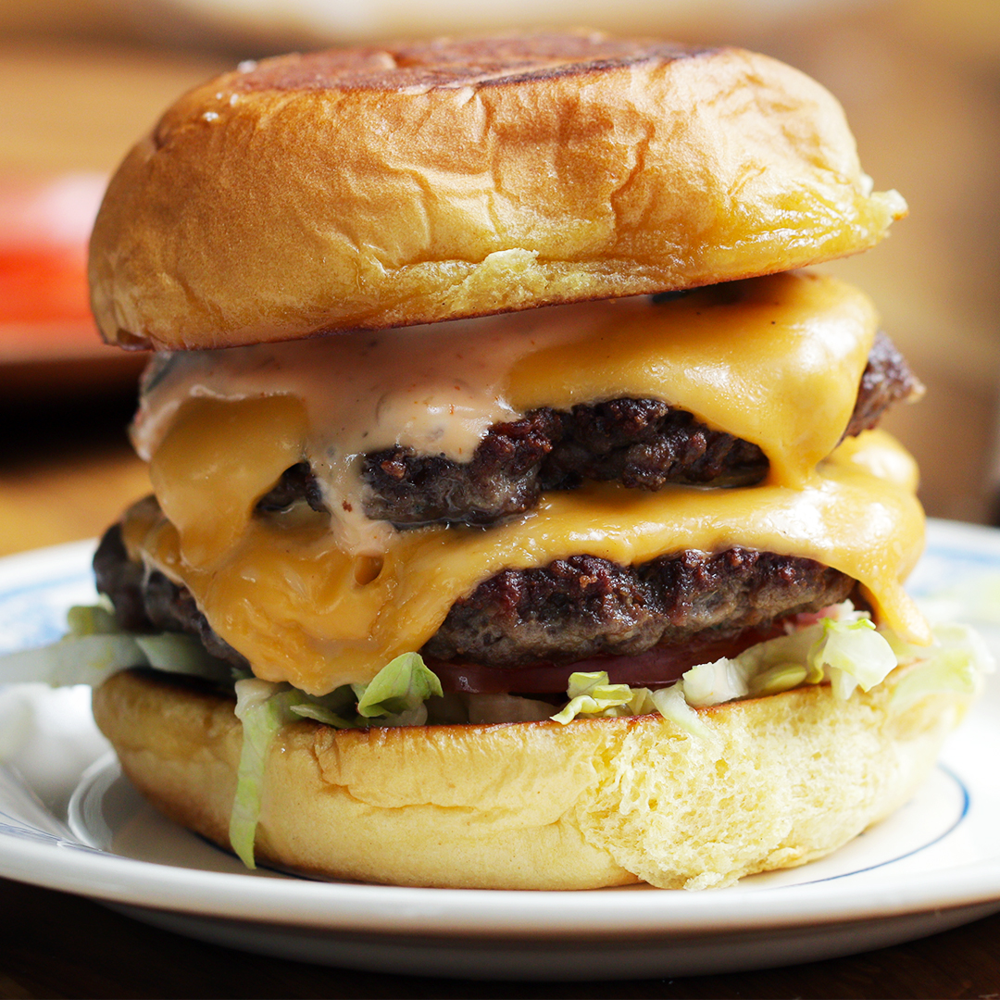

Amazing homemade double cheeseburger, ditch now the fast food out of your life
- 1 hamburger bun, split
- 1/3 pound ground beef
- 1 pinch salt
- 4 processed cheese singles
- 1 tablespoon thousand island salad dressing
- 1 slice tomato
- 1 leaf lettuce
- 1 slice onion
- Preheat a skillet over medium heat. Lightly toast both halves of the hamburger bun, cut sides down, 2 to 3 minutes. Set aside.
- Separate beef into 2 portions and form each into a thin patty slightly larger than the bun. Lightly salt each patty and cook on one side for 2 to 3 minutes. Flip patties over and immediately place two slices of American cheese on each one. Cook until meat has reached desired doneness, 2 to 3 minutes more. An instant-read thermometer inserted into the center should read at least 160 degrees F (70 degrees C).
- Assemble the double cheeseburger in the following order: bottom bun, dressing, tomato, lettuce, beef patty with cheese, onion, beef patty with cheese, and top bun.
Back to home